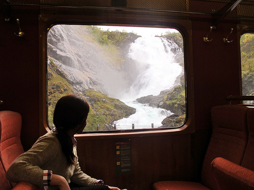
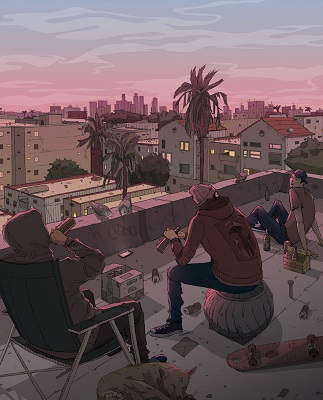

What is LoFi?
LoFi is a style and an aesthetic used in music, video, fashion and other media. It is characterised by serenity, gentleness, human warmth and androgyny, and often explores the everyday human experience.
LoFi can be many things.
- It can be a serene trainride.
 - It can be a slice of life.
 - It can be a warm home.
- It can be retrofuturism.
- It can be cats. Cats are extremely lo-fi.
LoFi Subjectivity
LoFi is a state of mind. It is therefore subjective. For each person it is different.
Here are fifteen things I consider to be LoFi...
- calm
- gentleness
- comfort
- serenity
- self-love
- loving friends
- holding hands
- soft sunshine
- the smell of the forest
- walking on concrete
- napping on the couch in a white walled apartment, leafy trees filtering the sunlight through the window
- chiffon cake
- a hoodie that is perfectly too large
- lowercase text
- bubblegum bottle gummies
LoFi Specialists
Some individuals specialise in creating lofi content.
For example, some artists train excruciatingly relaxedly to create LoFi artwork.
- Heikala's art is extremely lo-fi.

- So is Sarlisart's.

- The musician Toonorth creates beautiful LoFi music. Here's a nice track of his.
LoFi Cheatsheet
Here's a lo-fi cheatsheet to help you tell if somethig is lo-fi or not. Please note that it is neither exhaustive nor absolute.
Our research is ongoing. Please help our efforts by marking the following items as either lo-fi or not lo-fi.
To further aid our research please enter some things which you suspect may be lo-fi into the form below.
Since you're already helping us out could you please feed our cat too?